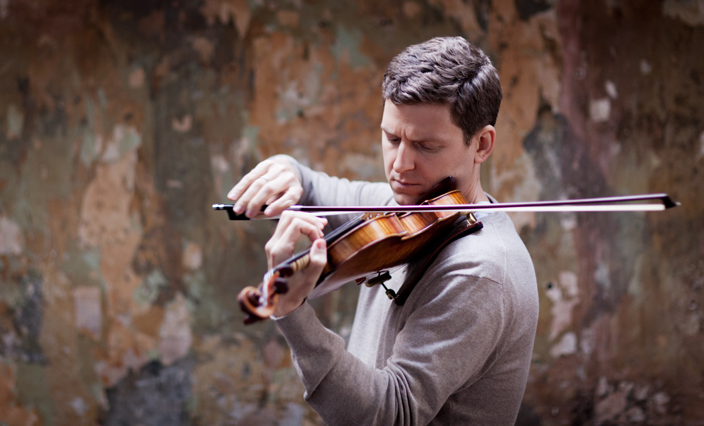
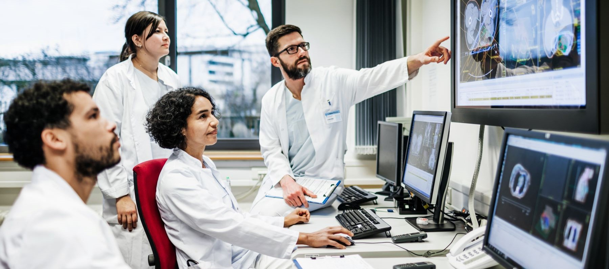

Benjamin Luo
Benji
Basketball
 I started playing basketball in the 3rd or 4th grade, and it’s my favorite sport to play and watch.
A lot of my friends play basketball, and it accounts for most of the exercise I get.
Because I was born in Boston, I’m also a huge
Boston Celtics fan.
I’ve been to two Celtics games in person and definitely want to go to more. I played basketball on the team freshman year, but I didn’t really have the time to keep playing.
I strongly believe the Celtics will win the championship in 2027!
I started playing basketball in the 3rd or 4th grade, and it’s my favorite sport to play and watch.
A lot of my friends play basketball, and it accounts for most of the exercise I get.
Because I was born in Boston, I’m also a huge
Boston Celtics fan.
I’ve been to two Celtics games in person and definitely want to go to more. I played basketball on the team freshman year, but I didn’t really have the time to keep playing.
I strongly believe the Celtics will win the championship in 2027!
Violin

I’ve played the violin since 1st grade, and it’s been my biggest hobby since. Violin has allowed me to meet many friends, along mentors that have taught me invaluable lessons. I've also got a lot of amazing memories and experiences through music. One of my favorite moments was performing Stravinsky’s Firebird as concertmaster of the California Honor Orchestra. Playing that finale surrounded by talented musicians was unforgettable.Research

Last summer, I did an internship at UCSD under Dr. Veronica Gomez-Godinez. We were studying tethers (elastic substances between chromosomes), and it was at that internship that I got my first glimpse at what research looks like. The following summer, I joined UCSD’s Supercomputer Center. I had a lot of freedom choosing my topic, which was something I didn't have in the last internship. I chose to study microRNAs and their connections to dementia. I’m still working on this project, and it’s been both challenging and exciting!